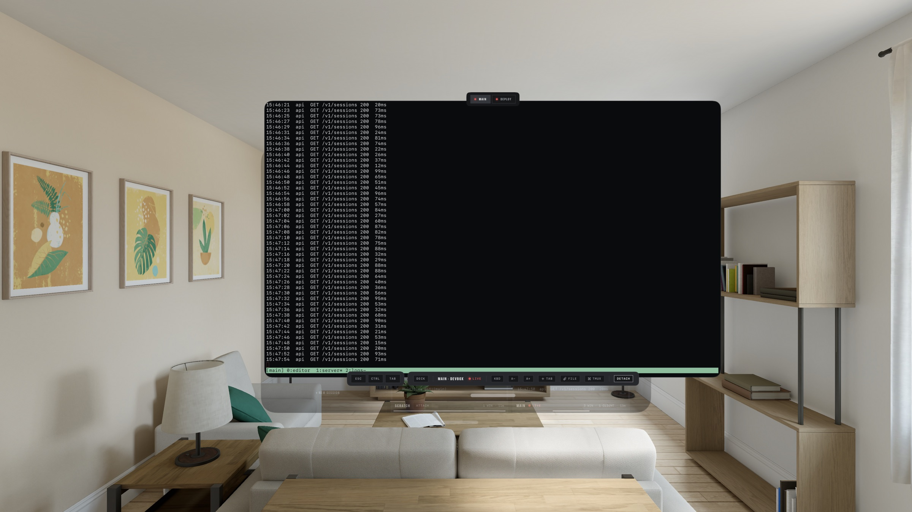
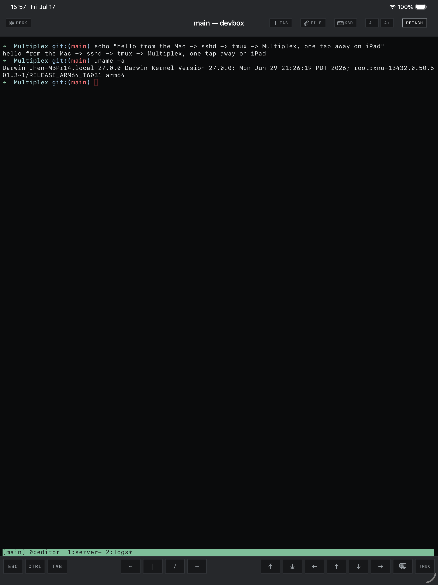

For Apple Vision Pro, iPad & iPhone
Your whole fleet, on air.
Multiplex is a spatial SSH terminal for remote tmux. Every session is a live monitor on a wall; attaching opens it in its own window.
Download on theApp StoreSee everything running, before you attach.
Add hosts over SSH and the wall fills itself: every tmux session streams its actual last lines, one spine segment per window, a red LIVE tally while you are attached. An unreachable host says NO SIGNAL, and reconnect is one tap.
Every session, its own window.
Attach puts a session in a real window: build logs above your editor on Vision Pro, true scenes in Stage Manager on iPad. Merge windows into tabs and split them back out. The SSH connection, buffer, and scrollback move with the tab, so shells never drop.

It knows when your agent needs you.
Multiplex spots Claude Code, Codex, and Pi in every pane of every session, right on the wall.
- Command chips follow the foreground agentStop, clear, compact, model and thinking switches. One tap, sent to the process that has your keystrokes.
- Your commands, per hostPRO UNMETEREDMove built-ins between the bar and More, add multiline custom commands, share them across all three agents. Setups sync with the host.
- Alerts when a session needs youPROA turn ends, a question is asked, a permission is requested: Multiplex notifies you, even from a plain SSH shell.
- Jump back through Claude promptsPROPrompt history read from Claude Code's own session file, full text where the TUI truncates, one tap to jump the transcript.
One connection carries everything.
The wall, file drops, and the mosh handshake all ride the host's SSH control connection. Nothing extra to install on the app side, nothing meddling with your tmux config.
mosh built in PRO
Flip a host to mosh and the session survives sleep, roaming, and IP changes. A native Swift mosh client, no companion app: made for a headset that suspends and an iPad that hops networks.
Drop a file, get a path
Drag a file onto the terminal, or attach from Files, Photos, or the iPad camera. Multiplex uploads it beside your agent and types the remote path, without pressing Enter.
~/project/.multiplex-drops/spec.pdf
A real terminal underneath
- xterm-256color with touch and pointer clicks for mouse-aware TUIs
- Multilingual input: system keyboards, IMEs, hardware keys
- tmux shortcut menu and touch-native copy mode
- Ten built-in themes, one per appearance, custom editor with Pro

No servers of ours. None.
Hosts, secrets, and command setups sync between your devices through iCloud Keychain, end-to-end encrypted. Your bytes go from your device to your host, and nowhere else.
One purchase, no subscription
Free to start. Pro for the fleet.
The full spatial experience, two hosts.
- Live wall, spatial windows, tabs, merge and split
- Agent detection everywhere, ten command-chip taps a day
- File drops, widgets, Shortcuts, iCloud Keychain sync
- Built-in themes, light and dark appearance
Everything in Free, plus the parts that scale.
- Unlimited hosts
- mosh: sessions survive sleep, roaming, IP changes
- Unmetered agent chips, and alerts when a session needs you
- Claude Code prompt history with jump-back-to-message
- Custom theme editor, on all your devices
You need a host you can reach over SSH, with a password or an OpenSSH ed25519 or RSA key. The live wall and persistent sessions need tmux 1.8+ on the host; plain SSH shells work without tmux; mosh needs mosh-server. Requires visionOS 1.0 or iOS 17.